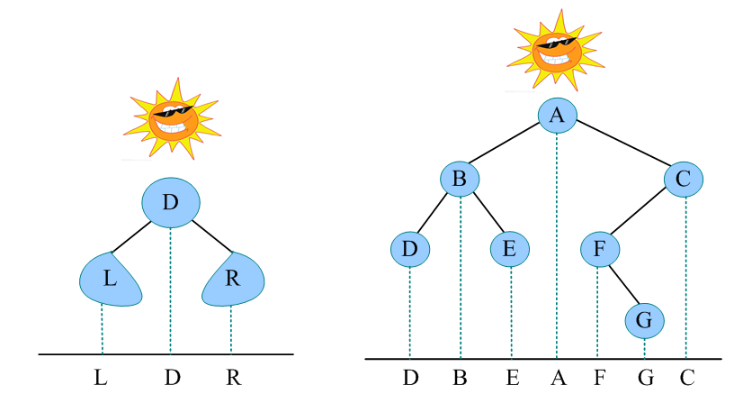
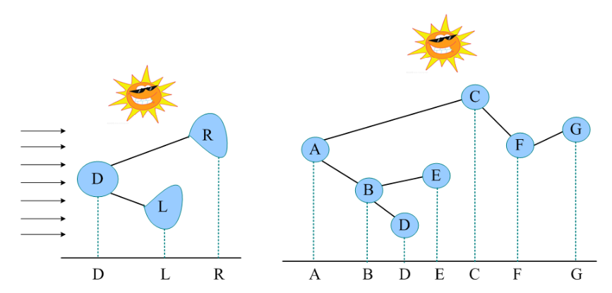
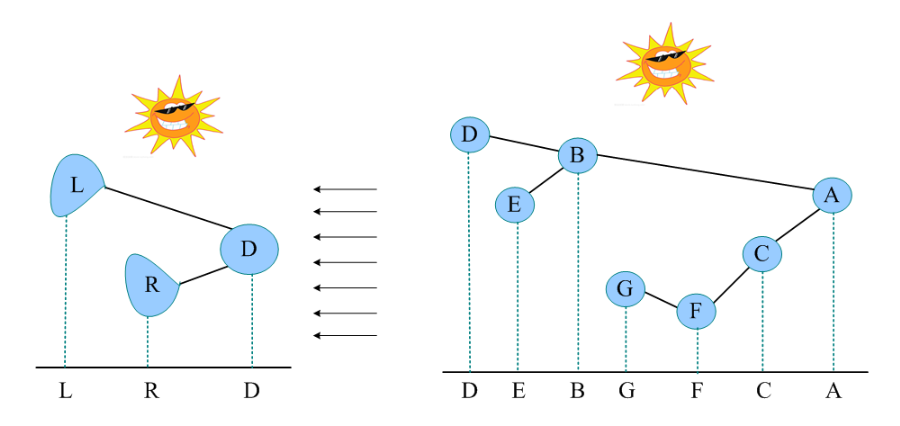

树
树的概念与性质
概念
1
- 结点的度: 结点的子结点个数
- 树的度: 树上结点度的最大值
2
- 结点的层次: 从根(1)向叶数层数
- 树的高(深)度: 树上结点的最大层数
3
1
2
3
4
5
| 1
/ \
2 3
/ \ / \
4 5 6 7
|
4
- 完全二叉树: 一直平铺，顺着铺到只有最后一层未必铺完的二叉树
1
2
3
4
5
| 1
/ \
2 3
/ \ /
4 5 6
|
5
- 平衡二叉树:∀结点左右子树深度差≤1
6
- 只有1个结点的树既是根也是叶
性质
树的性质
1
树上结点除根有且仅有1个前驱⇒n个结点的树有n−1条边
2
度为m的树度为i的结点个数=ni,i∈{0,...,m}树的边数=i=0∑m(i⋅ni)
3
1,2⇒(i=0∑mni)−1=i=0∑mi⋅ni
4
m叉树,n个结点,高hn≤1−m1−mh−1⋅m=m−1mh−1h≥logm(n(m−1)+1)
二叉树的性质
1
- n 个结点构成 Catalan(n) 种不同二叉树
2
- 度为 2 的树至少有 1 个度为 2 的结点 ⇒ 至少 3 个结点
- 二叉树可为空
3
- 总结点数n=n0+n1+n2
- 总边数n−1=0⋅n0+1⋅n1+2⋅n2
- n0=n2+1即双分支结点比叶子结点少1个
4
- 二叉树的叶子结点在二叉树 前/中/后 遍历序列的先后顺序相同
满二叉树的性质
| 结点 i 的 * |
下标 - 从 根(1) 层序编号 |
| 左子树 |
2 * i |
| 右子树 |
2 * i + 1 |
| 父结点 |
[2i] |
完全二叉树的性质
1
2
- 完全二叉树第1层有1个结点(根)，其余非底层结点数为偶
- 若底层结点数为偶即总结点数为奇，所有分支都有左右孩子
- 若总结点数为偶，则存在1个只有左孩子的分支
3
4
高度为 h 的完全二叉树 ⇔
- 满足以下两个条件的任一条
- 左子树为高度 h - 1 的完全二叉树，右子树为高度 h - 2 的满二叉树
- 左子树为高度 h - 1 的满二叉树， 右子树为高度 h - 1 的完全二叉树
树的算法
*序遍历
前/中/后序遍历
O(n)
层序遍历
1
2
3
4
5
6
7
8
9
10
11
12
13
14
15
16
17
18
19
20
21
22
| void LevelOrder(BiTree T)
{
queue<BiTree> Q;
Q.push(T);
BiTree p;
while (!Q.empty())
{
p = Q.front();
Q.pop();
visit(p);
if (p->lchild != NULL)
Q.push(p->lchild);
if (p->rchild != NULL)
Q.push(p->rchild);
}
}
|
投影法
中序遍历

前序遍历

后序遍历

特殊序列
1
- 二叉树先序序列与后序序列相反 ⟺ 二叉树退化为链
2
3
序列建树
* 序 + 中序构造二叉树
前序层序后序⎭⎬⎫+中序遍历序列⇒唯一确定二叉树
- 想要根据中序确定二叉树，只需要找到中序的根结点
- 根结点左序列是左子树，右序列是右子树，继续递归子树
前序
- 当前中序的根是当前前序顺序访问至的第一个元素
- 前序建树先递归左子树
层序
- 层序在前的元素更靠近根
- 当前中序的根是当前层序中第一个在中序中的元素
- 层序建树先递归左子树
后序
- 后序在后的元素更靠近根
- 当前中序的根是当前后序逆序访问至的第一个元素
- 当前后序逆序访问至的第一个元素的后一个元素是其右子树
- 后序建树先递归右子树
代码
1
2
3
4
5
6
7
8
9
10
11
12
13
14
15
16
17
18
19
20
21
22
23
24
25
26
27
28
29
30
31
32
33
34
35
36
37
38
39
40
41
42
43
44
45
46
47
48
49
50
51
52
53
54
55
56
| def split_seg(inorder, val):
idx = inorder.index(val)
return TreeNode(val), inorder[: idx], inorder[idx + 1:]
def inorder_preorder_buildTree(inorder, preorder):
preorder = deque(preorder)
def dfs(sub_inorder):
if not sub_inorder:
return None
val = preorder.popleft()
root, left, right = split_seg(sub_inorder, val)
root.left = dfs(left)
root.right = dfs(right)
return root
return dfs(inorder)
def inorder_levorder_buildTree(inorder, levorder):
levorder = deque(levorder)
def dfs(sub_inorder):
if not sub_inorder:
return None
for val in levorder:
if val in sub_inorder:
root, left, right = split_seg(sub_inorder, val)
root.left = dfs(left)
root.right = dfs(right)
return root
return dfs(inorder)
def inorder_postorder_buildTree(inorder, postorder):
def dfs(sub_inorder):
if not sub_inorder:
return None
val = postorder.pop()
root, left, right = split_seg(sub_inorder, val)
root.right = dfs(right)
root.left = dfs(left)
return root
return dfs(inorder)
|
先根 + 后根构造树
1
- 树的先根序 = 二叉树先序
- 树的后根序 = 二叉树中序
2
- 先根序 + 后根序 建出二叉左孩右兄树
- 转化为树
树与森林
树与森林的存储结构
顺序存储结构
双亲存储结构
数组存储父结点序号
顺序二叉树
根据高度开一棵满二叉树，将二叉树嵌入，不存在结点置空
下标从1开始，继承完全二叉树性质
链式存储结构
孩子存储结构
邻接表
孩子兄弟存储结构
链式二叉树
树与森林的转换
树→二叉树
左孩子右兄弟

二叉树→树
左孩子右兄弟法的逆过程
森林→二叉树
- 每棵树→二叉树
- 每棵树作为兄弟按照左孩子右兄弟法连接


树与森林的遍历
一般树的遍历
先根遍历
树的先根遍历:访问当前结点→访问所有子树→访问兄弟当树转化为二叉树后,树的先根遍历相当于:访问根→访问左子树→访问右子树∴树的先根遍历序列=树转化为二叉树后的先序遍历序列
1
2
3
4
5
6
7
8
| def preorder(tree):
if tree:
root, subs = tree
print(root, end=' ')
for sub in subs:
preorder(sub)
|
后根遍历
树的后根遍历:访问所有子树→访问当前结点→访问兄弟当树转化为二叉树后,树的后根遍历相当于:访问左子树→访问根→访问右子树∴树的后根遍历序列=树转化为二叉树后的中序遍历序列
1
2
3
4
5
6
7
8
| def postorder(tree):
if tree:
root, subs = tree
for sub in subs:
postorder(sub)
print(root, end=' ')
|
森林的遍历
先序遍历
1
2
3
| def forest_preorder(forest):
for tree in forest:
tree_preorder(tree)
|
中(后)序遍历
1
2
3
| def forest_postorder(forest):
for tree in forest:
tree_postorder(tree)
|